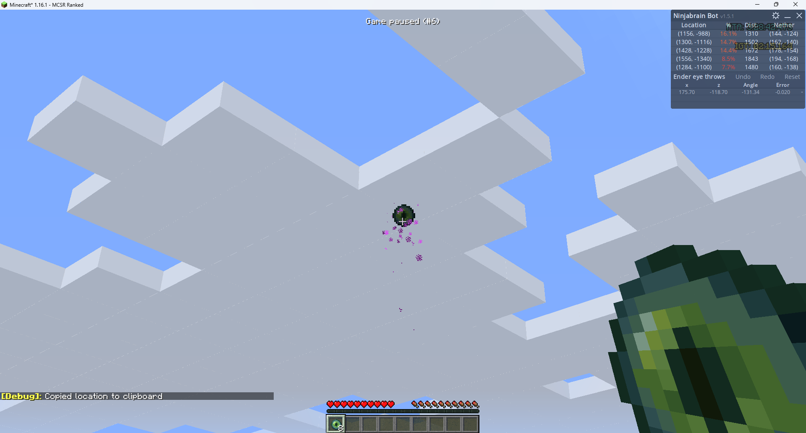
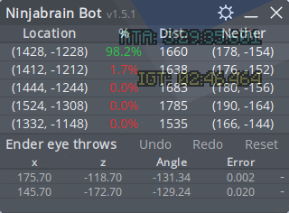

NinJa Brain Calc
This page is based on this helpful video

Ninjabrain Bot is a utility used primarily by speedrunners to calculate the Stronghold's coordinates with high accuracy after only two or three Eye of Ender throws, eliminating the need for manual trigonometric calculations.
Step 1: Installation and Setup
1. Download the Program: The program is typically distributed as a Java archive file. You'll need to download the latest release, usually named ninjabrainbot-[version number].jar.
2. Run the File: Save the .jar file to an accessible folder and run it to launch the calculator interface.
3. Configure Settings: Access the bot's settings to ensure accurate Stronghold location display:
Step 2: Low Precision Triangulation (The Core Method)
This is the standard, most forgiving strategy for locating the Stronghold. It typically requires three Eye throws to achieve high confidence.
1. First Throw and Input:
○ Before throwing, stand in the corner of 2 blocks to correct for any potential synchronization issues (d-sync).
○ Throw your first Eye of Ender
○ Change your FOV to 30
○ Reduce your mouse sensitivity
○ Align your crosshair with the left of the center pixels
○ Press F3 + C to give Ninjabrain bot your angle
2. Second Throw and Calculation:
○ Move away from your initial position.
○ Throw a second Eye, record the new measurement.
○ The bot will immediately display the most likely Stronghold coordinates and a confidence percentage.
○ If the confidence is low (e.g., 36%), travel to the calculated location and perform a third Eye throw to confirm the Stronghold's exact chunk. A high-confidence result (e.g., 99.0%) confirms the coordinates
